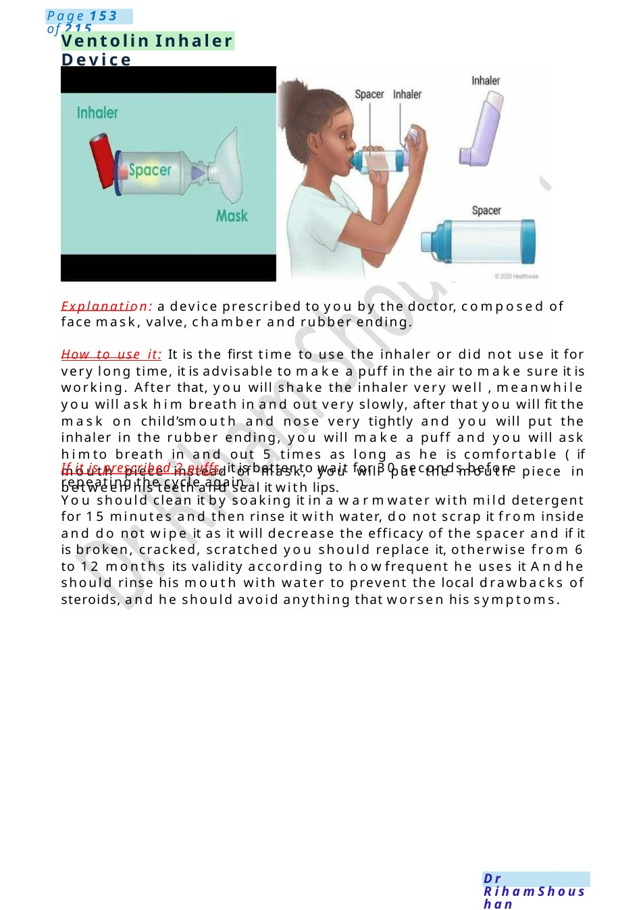
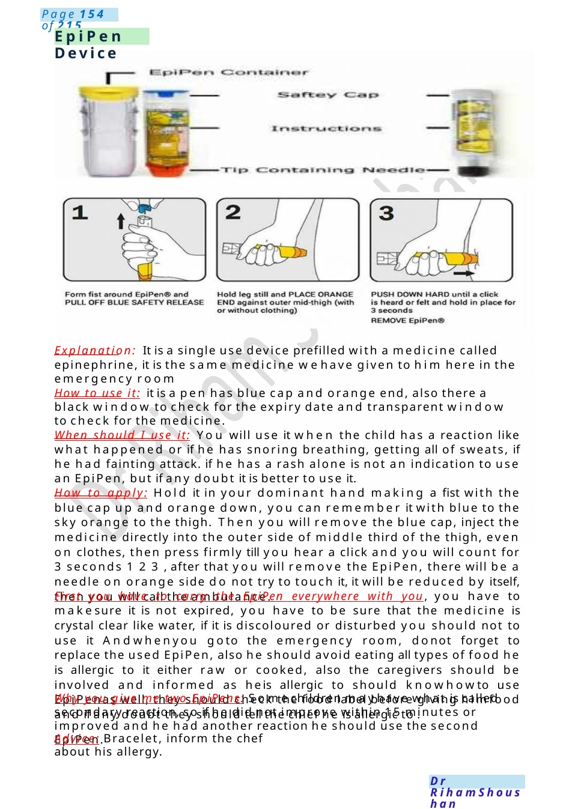

Ventolin Inhaler Device
Explanation: a device prescribed to you by the doctor, composed of face mask, valve, chamber and rubber ending. How to use it: It is the first time to use the inhaler or did not use it for very long time, it is advisable to make a puff in the air to make sure it is working. After that, you will shake the inhaler very well , meanwhile you will ask him breath in and out very slowly, after that you will fit the mask on child’smouth and nose very tightly and you will put the inhaler in the rubber ending, you will make a puff and you will ask himto breath in and out 5 times as long as he is comfortable ( if mouth piec…
Scenario Summary
Explanation: a device prescribed to you by the doctor, composed of face mask, valve, chamber and rubber ending. How to use it: It is the first time to use the inhaler or did not use it for very long time, it is advisable to make a puff in the air to make sure it is working. After that, you will shake the inhaler very well , meanwhile you will ask him breath in and out very slowly, after that you will fit the mask on child’smouth and nose very tightly and you will put the inhaler in the rubber ending, you will make a puff and you will ask himto breath in and out 5 times as long as he is comfortable ( if mouth piec…
Full Original Scenario

Ventolin Inhaler Device
Explanation: a device prescribed to you by the doctor, composed of face mask, valve, chamber and rubber ending.
How to use it: It is the first time to use the inhaler or did not use it for very long time, it is advisable to make a puff in the air to make sure it is working. After that, you will shake the inhaler very well , meanwhile you will ask him breath in and out very slowly, after that you will fit the mask on child’smouth and nose very tightly and you will put the inhaler in the rubber ending, you will make a puff and you will ask himto breath in and out 5 times as long as he is comfortable ( if mouth piece instead of mask, you will put the mouth piece in between his teeth and seal it with lips.
If it is prescribed 2 puffs, it is better to wait for 30 seconds before repeating the cycle again.
You should clean it by soaking it in a warmwater with mild detergent for 15 minutes and then rinse it with water, do not scrap it from inside and do not wipe it as it will decrease the efficacy of the spacer and if it is broken, cracked, scratched you should replace it, otherwise from 6 to 12 months its validity according to howfrequent he uses it Andhe should rinse his mouth with water to prevent the local drawbacks of steroids, and he should avoid anything that worsen his symptoms.

Epi Pen Device
Explanation: It is a single use device prefilled with a medicine called epinephrine, it is the same medicine wehave given to him here in the emergency room
How to use it: it is a pen has blue cap and orange end, also there a black window to check for the expiry date and transparent window to check for the medicine.
When should I use it: You will use it when the child has a reaction like what happened or if he has snoring breathing, getting all of sweats, if he had fainting attack. if he has a rash alone is not an indication to use an Epi Pen, but if any doubt it is better to use it.
How to apply: Hold it in your dominant hand making a fist with the blue cap up and orange down, you can remember it with blue to the sky orange to the thigh. Then you will remove the blue cap, inject the medicine directly into the outer side of middle third of the thigh, even on clothes, then press firmly till you hear a click and you will count for 3 seconds 1 2 3 , after that you will remove the Epi Pen, there will be a needle on orange side do not try to touch it, it will be reduced by itself, then you will call the ambulance.
First you have to carry the Epi Pen everywhere with you, you have to makesure it is not expired, you have to be sure that the medicine is crystal clear like water, if it is discoloured or disturbed you should not to use it Andwhenyou goto the emergency room, donot forget to replace the used Epi Pen, also he should avoid eating all types of food he is allergic to it either raw or cooked, also the caregivers should be involved and informed as heis allergic to should knowhowto use Epi Penas well, they should check the food label before giving himfood and if any doubt they should tell the chief he is allergic to .
Why you give me two Epi Pens: Somechildren mayhave what is called secondary reaction, so if he did not improve within 15 minutes or improved and he had another reaction he should use the second Epi Pen.